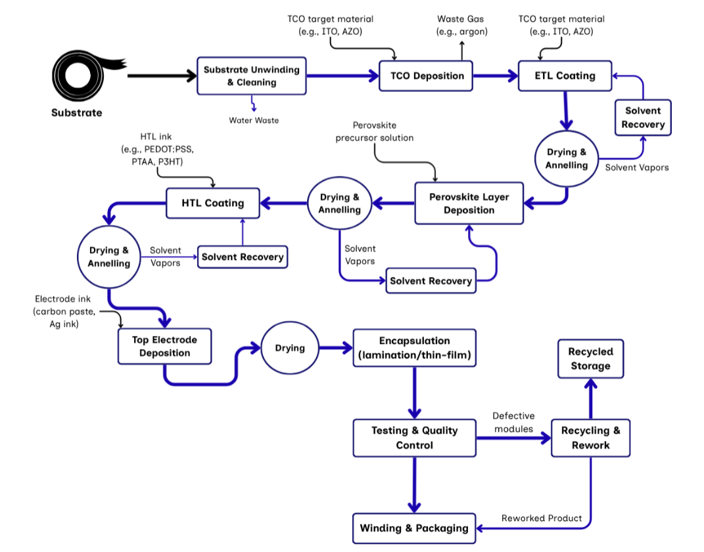
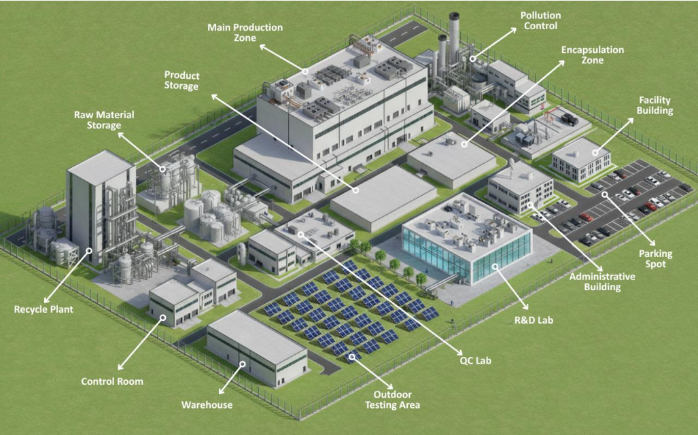
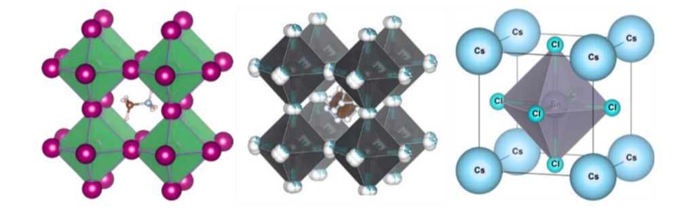
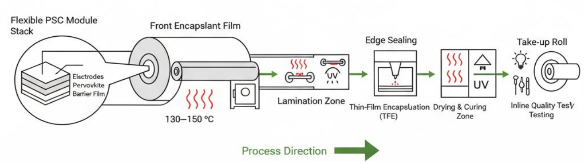

Commercialization of Perovskite-Based Solar Systems in Bangladesh: A Circular Economical Approach
A Techno-Economic & Materials Engineering Study for Scalable Roll-to-Roll (R2R) Manufacturing
Exam Roll: 2325429 | Reg No: 2020-315-953 | Session 2020-21 | Dept. of Applied Chemistry & Chemical Engineering, University of Dhaka
← Back to portfolioProject overview
The context
Bangladesh relies on fossil fuels for about 97% of its electricity, which creates serious energy security risks and environmental strain. Solar energy is a viable alternative, but traditional silicon panels are heavy, rigid, and expensive to import. Flexible perovskite solar cells (PSCs) offer a high-efficiency (above 30%), low-cost alternative that can be made at low temperatures, but challenges in stability, scalability, and environmental safety must be addressed.
The engineering solution
This project designs a 10 MW/year roll-to-roll (R2R) manufacturing facility. R2R enables continuous, high-throughput fabrication on flexible PET/ITO substrates at temperatures below 150°C, which sharply reduces manufacturing cost compared with silicon. The design uses slot-die coating, inline drying, and advanced encapsulation to support scalability and product lifetime.
The impact
The design applies circular economy principles, such as recovering 80–90% of solvent vapours (DMF/DMSO) and recycling PET/ITO trim waste. It supports Bangladesh’s Vision 2041 renewable energy goals and could create skilled engineering jobs.
How the study was approached
The work moved from the problem, to the materials, to the process, and finally to feasibility.
Frame the problem
Established why Bangladesh needs a low-cost, flexible solar technology, and which barriers (stability, scalability, environmental safety) a manufacturing design must solve.
Select and verify the materials
Chose every layer for low-temperature R2R processing and environmental stability, and validated the FAPbI3 and MAPbI3 perovskites with SEM and XRD for phase purity and grain morphology.
Design and control the process
Arranged the line as a continuous sequence of coating, drying, and lamination steps, and defined the PLC and SCADA control parameters that protect film quality.
Test feasibility and circularity
Estimated cost, energy payback, and material localization, and built solvent recovery and waste recycling into the plant design. These figures are estimates rather than measured results.
Process engineering and control
The manufacturing line runs continuously through eight stages.
- Substrate unwinding and cleaning (UV-ozone)
- Transparent conductive oxide (TCO) deposition
- Electron transport layer (ETL) coating
- Perovskite layer deposition (slot-die)
- Hole transport layer (HTL) coating
- Top electrode deposition
- Encapsulation (lamination)
- Testing, quality control, and packaging

PLC and SCADA process control
Programmable logic controllers provide real-time automation to keep yield high and films uniform.
Web tension
Maintained within ±0.5 N to prevent wrinkling or micro-cracking of the flexible substrate.
Coating thickness
Monitored in real time by laser micrometers, with an accuracy of ±50 nm.
Thermal control
PID loops regulate the annealing and drying zones between 80 and 150°C to prevent phase degradation.
Alignment
Optical sensors keep deviation below 0.2 mm during multilayer coating.

Materials selection and characterization
The optoelectronic properties of the ABX3 crystal structure, specifically FAPbI3 and MAPbI3, allow tunable bandgaps, high absorption coefficients, and long carrier diffusion lengths. Each material in the device stack was chosen for low-temperature R2R processing and environmental stability.
| Component | Selected material | Engineering justification |
|---|---|---|
| Substrate | PET/ITO | Cost-effective, highly flexible, and compatible with roll-to-roll processing. |
| Electron transport layer | SnO2 nanoparticles | High electron mobility; processable at low temperatures (below 120°C). |
| Hole transport layer | PEDOT:PSS or NiOx | Cost-effective aqueous processing; NiOx is a stable inorganic alternative. |
| Encapsulation | PIB + POE barrier film | Ultra-low water vapour transmission rate (WVTR below 10−6 g/m²/day); critical for tropical climates. |
| Top electrode | Carbon paste or Ag ink | Carbon is low-cost and chemically stable; silver ink offers high conductivity. |


Feasibility and localization
A financial model was developed for a 10 MW/year facility in Bangladesh, based on estimated capital cost, working capital, and operating cost. The values are projections and depend on assumptions, so they indicate scale rather than exact outcomes. The localization outlook below is more practical for the study, because it shows how the supply chain could be built within five years.
View the estimated financial summary
| Metric | Estimated value |
|---|---|
| Total initial investment | $13.0 million (CAPEX $11M + working capital $2M) |
| Operating cost | $4.25 million per year |
| Break-even point | About 4.8 years |
| Net present value (15% discount rate) | About $4.2 million |
| Internal rate of return | 18–19% |
| Energy payback time | About 3 days |
All values are estimates from the study’s model.
Material localization potential (5-year outlook)
| Material category | Potential | Strategy |
|---|---|---|
| Solvents and additives | High | Use Bangladesh’s established pharmaceutical sector. |
| Substrates (PET/PEN) | High | Local plastics manufacturing plus imported ITO coating. |
| Glass and encapsulants | Very high | Available from domestic glass and polymer manufacturers. |
| Inorganic precursors | Medium | Set up local purification units for PbI2 and FAI. |
Circular economy and sustainability
The facility is designed to reduce environmental impact and use resources efficiently.
- Solvent recovery: a membrane distillation system captures and purifies 80–90% of DMF and DMSO vapours, which cuts VOC emissions and raw material cost.
- Waste recycling: PET/ITO trim waste is mechanically recycled, and spent sputtering targets (ITO/AZO) are reclaimed for their valuable metal content.
- Safety and compliance: ISO 14001 and local DoE regulations guide lead (Pb) handling, with impermeable flooring and stabilization of sludge for safe disposal.